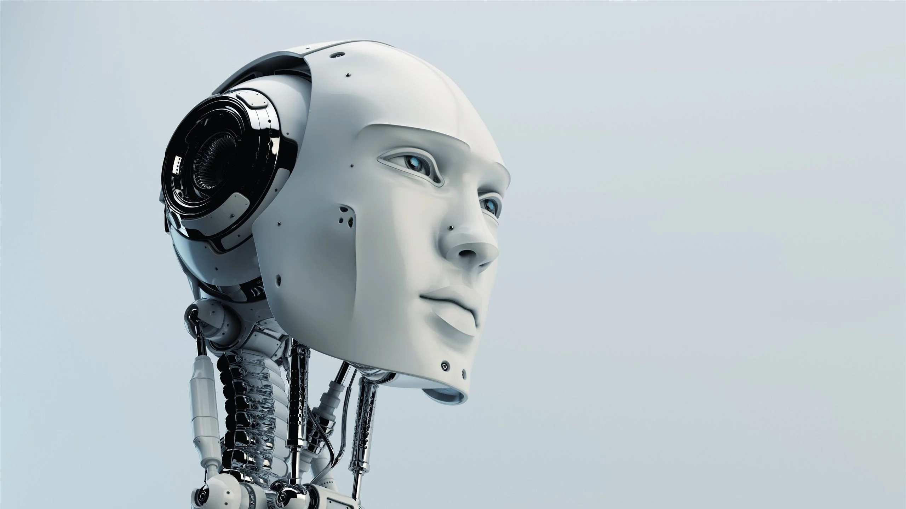

La ciencia y la tecnología, a pesar de sus inmensos avances y beneficios, enfrentan múltiples retos en la actualidad que requieren atención urgente y estrategias integrales. Estos desafíos son complejos y multifacéticos, involucrando aspectos técnicos, éticos, sociales y ambientales que deben ser abordados para asegurar un desarrollo sostenible y equitativo.
Uno de los principales retos es el manejo responsable de la inteligencia artificial y la automatización. Aunque estas tecnologías prometen aumentar la eficiencia y abrir nuevas posibilidades, también plantean preocupaciones sobre la pérdida de empleos, la privacidad, la seguridad y la toma de decisiones automatizadas sin supervisión humana adecuada. La transparencia, la ética y la regulación son aspectos críticos para mitigar riesgos.
Otro desafío significativo es el cambio climático y la crisis ambiental. La ciencia ha demostrado que la actividad humana ha alterado los sistemas naturales de manera alarmante, poniendo en peligro la biodiversidad, la disponibilidad de recursos y la salud del planeta. La tecnología debe contribuir a la mitigación y adaptación mediante energías limpias, eficiencia energética, manejo sostenible de recursos y soluciones innovadoras para la restauración ambiental.
La equidad en el acceso a los beneficios de la ciencia y la tecnología también es un reto fundamental. La brecha digital y científica entre países desarrollados y en desarrollo genera desigualdades que afectan la educación, la salud y la capacidad productiva. Promover la inclusión, la transferencia de tecnología y la cooperación internacional es vital para construir un futuro más justo.
En el ámbito de la bioética, los avances en genética, biotecnología y medicina personalizada plantean interrogantes sobre la manipulación genética, la privacidad de datos genómicos y las implicaciones sociales de la modificación del ser humano. Establecer marcos normativos y éticos que guíen estas prácticas es esencial para evitar abusos y proteger los derechos humanos.
Además, la desinformación y el mal uso de la tecnología representan retos sociales que afectan la confianza en la ciencia y pueden poner en riesgo la salud pública y la cohesión social. La educación científica y la comunicación efectiva son herramientas clave para contrarrestar estas amenazas.
Finalmente, la rápida evolución tecnológica requiere una actualización constante de las políticas públicas, la educación y las capacidades humanas para adaptarse a los cambios. La formación en habilidades digitales, el fomento del pensamiento crítico y la inversión en investigación son necesarios para enfrentar estos retos con éxito.
En resumen, los retos actuales de la ciencia y la tecnología son una invitación a la responsabilidad colectiva, la cooperación interdisciplinaria y la visión estratégica para aprovechar las oportunidades y minimizar los riesgos en beneficio de toda la humanidad y el planeta.